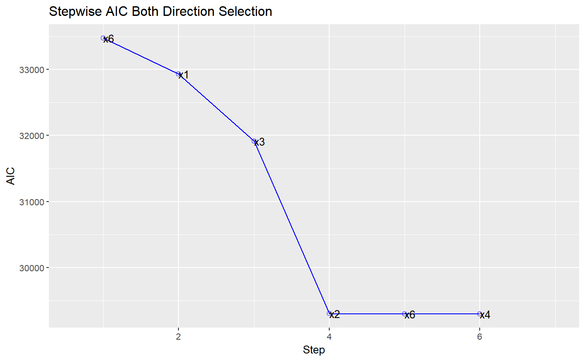

Build regression model from a set of candidate predictor variables by entering and removing predictors based on akaike information criteria, in a stepwise manner until there is no variable left to enter or remove any more.
ols_step_both_aic(model, details = FALSE) # S3 method for ols_step_both_aic plot(x, ...)
| model | An object of class |
|---|---|
| details | Logical; if |
| x | An object of class |
| ... | Other arguments. |
ols_step_both_aic returns an object of class "ols_step_both_aic".
An object of class "ols_step_both_aic" is a list containing the
following components:
variables added/removed from the model
addition/deletion
akaike information criteria
error sum of squares
regression sum of squares
rsquare
adjusted rsquare
total number of steps
ols_stepaic_both() has been deprecated. Instead use ols_step_both_aic().
Venables, W. N. and Ripley, B. D. (2002) Modern Applied Statistics with S. Fourth edition. Springer.
Other variable selection procedures: ols_step_all_possible,
ols_step_backward_aic,
ols_step_backward_p,
ols_step_best_subset,
ols_step_forward_aic,
ols_step_forward_p
# stepwise regression model <- lm(y ~ ., data = stepdata) ols_step_both_aic(model)#> Stepwise Selection Method #> ------------------------- #> #> Candidate Terms: #> #> 1 . x1 #> 2 . x2 #> 3 . x3 #> 4 . x4 #> 5 . x5 #> 6 . x6 #> #> #> Variables Entered/Removed: #> #> <U+2714> x6 #> <U+2714> x1 #> <U+2714> x3 #> <U+2714> x2 #> <U+2716> x6 #> <U+2714> x4 #> #> No more variables to be added or removed.#> #> #> Stepwise Summary #> ---------------------------------------------------------------------------------- #> Variable Method AIC RSS Sum Sq R-Sq Adj. R-Sq #> ---------------------------------------------------------------------------------- #> x6 addition 33473.297 6241.497 13986.736 0.69145 0.69143 #> x1 addition 32931.758 6074.156 14154.076 0.69972 0.69969 #> x3 addition 31912.722 5771.842 14456.391 0.71466 0.71462 #> x2 addition 29304.296 5065.587 15162.646 0.74958 0.74953 #> x6 removal 29302.317 5065.592 15162.641 0.74958 0.74954 #> x4 addition 29300.814 5064.705 15163.528 0.74962 0.74957 #> ---------------------------------------------------------------------------------- #># stepwise regression plot model <- lm(y ~ ., data = stepdata) k <- ols_step_both_aic(model)#> Stepwise Selection Method #> ------------------------- #> #> Candidate Terms: #> #> 1 . x1 #> 2 . x2 #> 3 . x3 #> 4 . x4 #> 5 . x5 #> 6 . x6 #> #> #> Variables Entered/Removed: #> #> <U+2714> x6 #> <U+2714> x1 #> <U+2714> x3 #> <U+2714> x2 #> <U+2716> x6 #> <U+2714> x4 #> #> No more variables to be added or removed.plot(k)